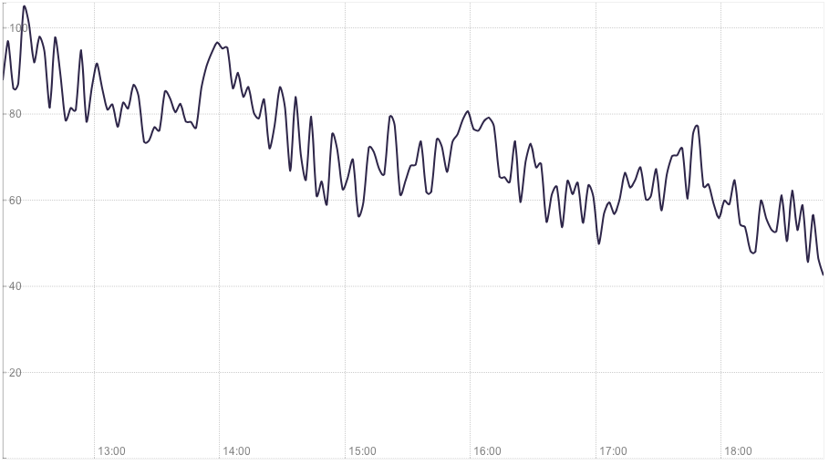
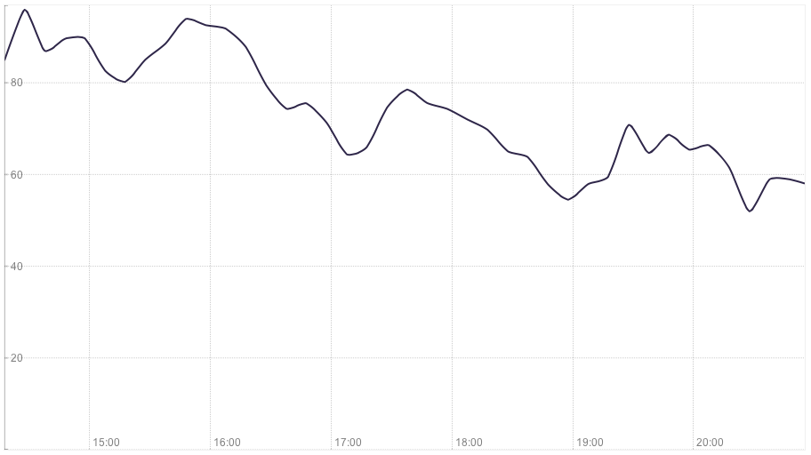
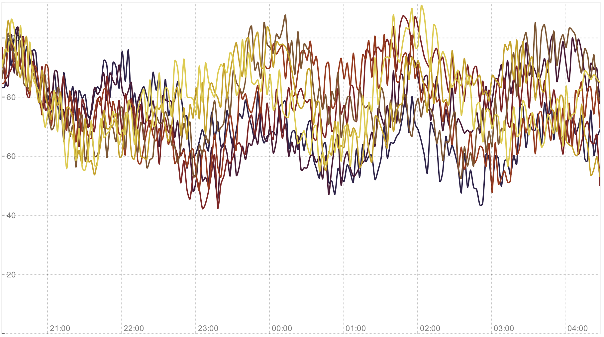
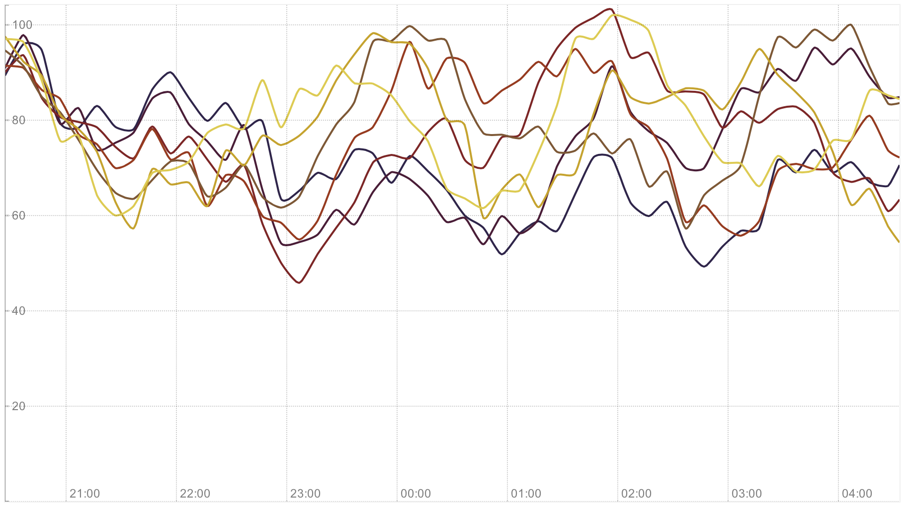
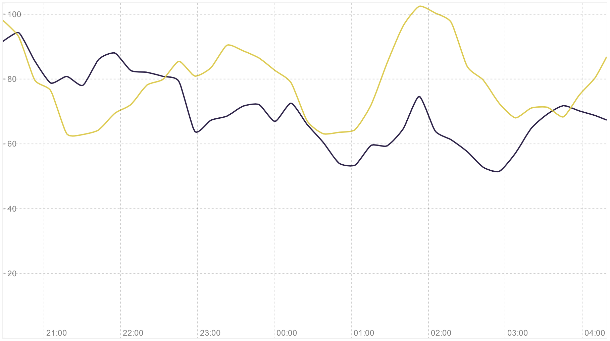
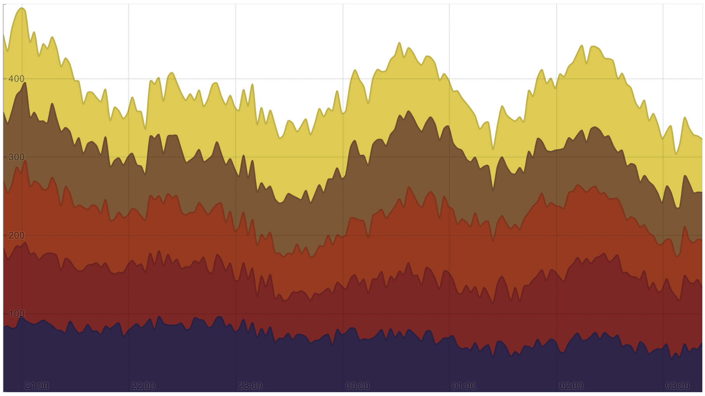
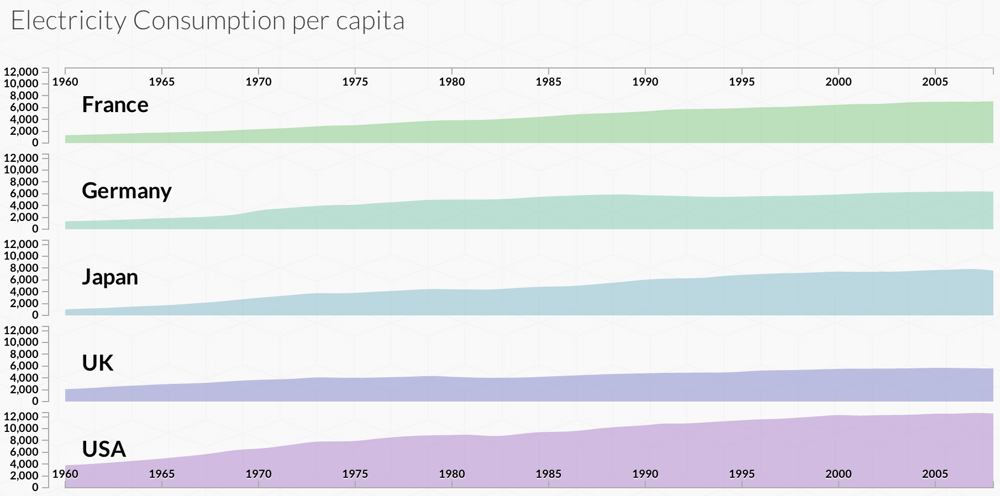

Łączy dane z elementami DOM
Wspiera CSS oraz JS
Łatwość analizowania i rozszerzania
Szybkość, prostota i wydajność
Animacje i przejścia
Zbyt duża zmienność danych
Mała zmienność danych
Zbyt duża liczba serii i danych
Duża liczba serii o mniejszej zmienności
Mała liczba serii o małej zmienności
Łatwość obserwacji pierwszej serii i sumy
Trudność analizy serii pośrednich
Trudność obserwacji sumy
Łatwość analizy wszystkich serii
Widok ogólny i szczegółowy
Kontekst i powiększenie
Niezależne serie i osie
Procentowy udział w okresie czasu
Suma poszczególnych elementów
Ładowanie ostatnich danych i odświeżanie
Liczba unikalnych użytkowników oraz wejść na strony
Ruch sieciowy między serwisami
Obciążenie określonych węzłów